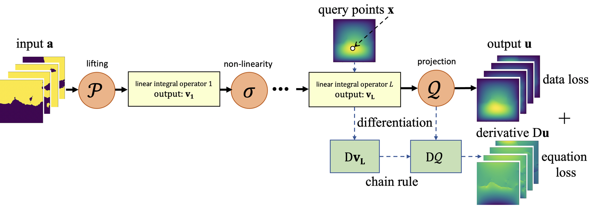

PIC-GO: Core-First Residual Routing for Runtime-Hidden Physical Regime
A physics-informed neural operator with frozen-core fallback and selective gated residual correction.
Representative figure: PINO neural operator architecture · arXiv:2111.03794